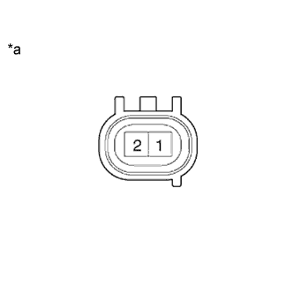

DTC P0046 Диапазон / характеристики цепи электромагнитного клапана управления турбонагнетателя / объемного нагнетателя |
DTC P0047 Низкий уровень сигнала в цепи "A" управления турбонагнетателя / объемного нагнетателя |
DTC P0048 Высокий уровень сигнала в цепи "A" управления турбонагнетателя / объемного нагнетателя |
| Режим поездки при обнаружении DTC | Условие обнаружения DTC | Неисправный участок |
| Зажигание включено (IG) в течение 5 с | Во время работы электродвигателя регистрируется выполнение любого из следующих условий (логика диагностирования за 1 поездку):
|
|
| Режим поездки при обнаружении DTC | Условие обнаружения DTC | Неисправный участок |
| Через 2 с после запуска двигателя повышайте частоту вращения коленчатого вала в течение 1 с | Во время работы электродвигателя в течение не менее 1 с регистрируется выполнение обоих следующих условий (логика диагностирования за 1 поездку):
|
|
| Режим поездки при обнаружении DTC | Условие обнаружения DTC | Неисправный участок |
| Через 2 с после запуска двигателя повышайте частоту вращения коленчатого вала в течение 1 с | Не менее 25 раз регистрируется перегрузка по току (логика диагностирования за 1 поездку). |
|
| 1.ПРОВЕРЬТЕ, ВЫВОДЯТСЯ ЛИ ДРУГИЕ DTC (ПОМИМО DTC P0046, P0047 И/ИЛИ P0048) |
Подсоедините портативный диагностический прибор к DLC3.
Включите зажигание (IG) и портативный диагностический прибор.
Войдите в следующие меню: Powertrain / Engine and ECT / DTC.
Считайте коды DTC.
| Результат | Следующий шаг |
| Выводятся какие-либо из кодов P0046, P0047 и P0048 | А |
| Выводятся какие-либо из кодов P0046, P0047 и P0048 и другие DTC | B |
|
| ||||
| А | |
| 2.ПРОВЕРЬТЕ ТУРБОНАГНЕТАТЕЛЬ В СБОРЕ (РАБОТУ ЭЛЕКТРОДВИГАТЕЛЯ ПОСТОЯННОГО ТОКА) |
Проверьте турбонагнетатель в сборе (Нажмите здесь).
|
| ||||
| OK | ||
| ||
| 3.ПРОВЕРЬТЕ ТУРБОНАГНЕТАТЕЛЬ В СБОРЕ (СОПРОТИВЛЕНИЕ ЭЛЕКТРОДВИГАТЕЛЯ ПОСТОЯННОГО ТОКА) |
|  |
Отсоедините разъем электродвигателя постоянного тока.
Измерьте сопротивление в соответствии со значениями, приведенными в таблице ниже.
| Контакты для подключения диагностического прибора | Состояние | Заданные условия |
| 1 (M-) - 2 (M+) | Всегда | 1-100 Ом |
| *a | Устройство с неподсоединенным жгутом проводов (электродвигатель постоянного тока) |
Подсоедините разъем электродвигателя постоянного тока.
|
| ||||
| OK | |
| 4.ПРОВЕРЬТЕ ЖГУТ ПРОВОДОВ И РАЗЪЕМ (ЭЛЕКТРОДВИГАТЕЛЬ ПОСТОЯННОГО ТОКА – ECM) |
Отсоедините разъем электродвигателя постоянного тока.
Отсоедините разъем ЭБУ.
Измерьте сопротивление в соответствии со значениями, приведенными в таблице ниже.
| Контакты для подключения диагностического прибора | Условие | Заданные условия |
| C75-1 (M-) - C93-7 (M-) | Всегда | Менее 1 Ом |
| C75-2 (M+) - C93-6 (M+) | Всегда | Менее 1 Ом |
| Контакты для подключения диагностического прибора | Условие | Заданные условия |
| C75-1 (M-) или C93-7 (M-) - масса | Всегда | 10 кОм или более |
| C75-2 (M+) или C93-6 (M+) - масса | Всегда | 10 кОм или более |
Подсоедините разъем электродвигателя постоянного тока.
Подсоедините разъем ECM.
|
| ||||
| OK | |
| 5.ЗАМЕНИТЕ ECM |
Замените ECM (Нажмите здесь).
|
| ||||
| 6.ЗАМЕНИТЕ ТУРБОНАГНЕТАТЕЛЬ |
Замените турбонагнетатель в сборе (Нажмите здесь).
|
| ||||
| 7.ОТРЕМОНТИРУЙТЕ ИЛИ ЗАМЕНИТЕ ЖГУТ ПРОВОДОВ ИЛИ РАЗЪЕМ |
Отремонтируйте или замените жгут проводов или разъем.
| ДАЛЕЕ | |
| 8.ПРОВЕРЬТЕ, УСТРАНЕНА ЛИ ДОЛЖНЫМ ОБРАЗОМ НЕИСПРАВНОСТЬ |
Подсоедините портативный диагностический прибор к DLC3.
Удалите коды DTC (Нажмите здесь).
Выключите зажигание.
Включите зажигание (IG) и подождите не менее 5 с.
Войдите в следующие меню: Powertrain / Engine / DTC.
Убедитесь, что DTC не выводится снова.
| ДАЛЕЕ | ||
| ||